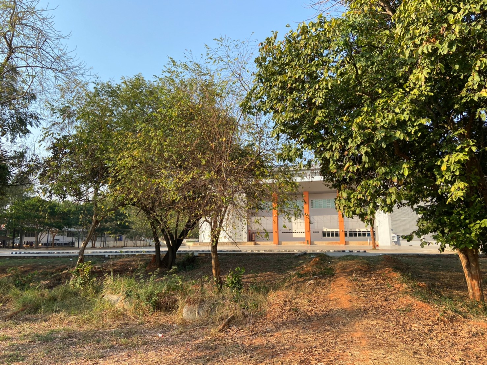
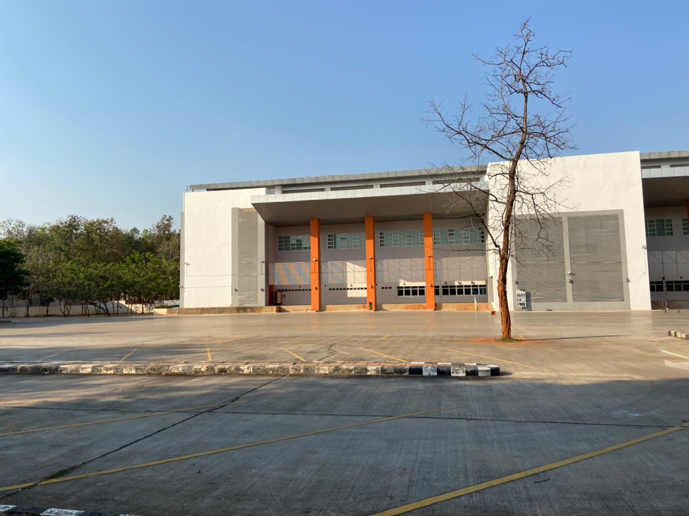
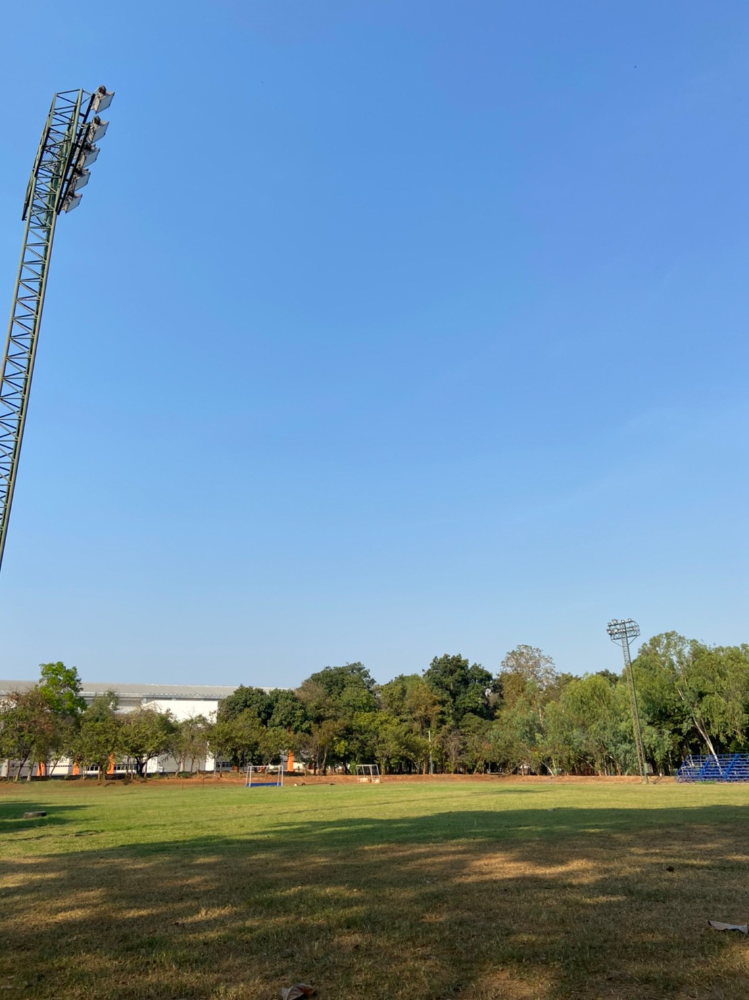
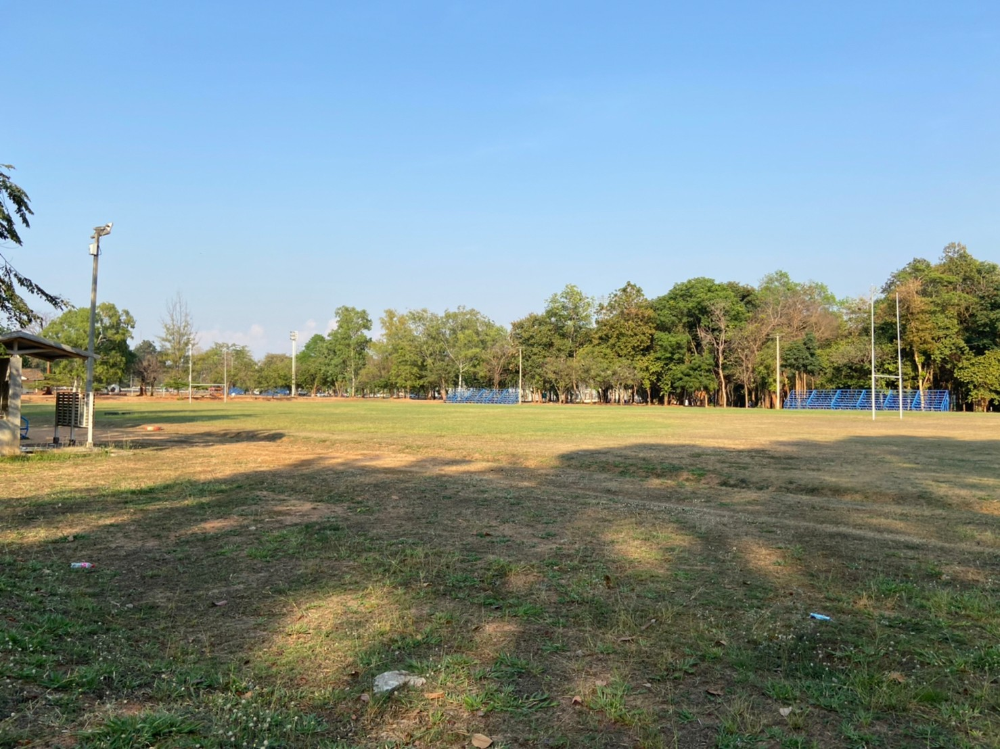

เป็นสถานที่สำหรับซ้อมและแข่งขันกีฬาต่าง ๆ ของนักศึกษามหาวิทยาลัยขอนแก่น เช่น กีฬาเทควันโด ยูโด มวยสากล บาสเกตบอล คาราเต้ วอลเลย์บอล ตะกร้อ แบดมินตัน ปิงปอง ฟันดาบ เป็นต้น
เป็นลานที่ใช้สำหรับเล่นสเก็ตบอร์ดสำหรับบุคคลทั่วไป
เป็นสนามที่ไว้สำหรับนักศึกษามหาวิทยาลัยขอนแก่นฝึกซ้อมและแข่งขันกีฬาฮอกกี้
เป็นสนามที่ไว้สำหรับนักศึกษามหาวิทยาลัยขอนแก่นฝึกซ้อมและลงแข่งกีฬาเปตอง
เป็นสนามสำหรับการฝึกซ้อมและแข่งขันกีฬารักบี้ และฟุตบอลของนักศึกษามหาวิทยาลัยขอนแก่น
